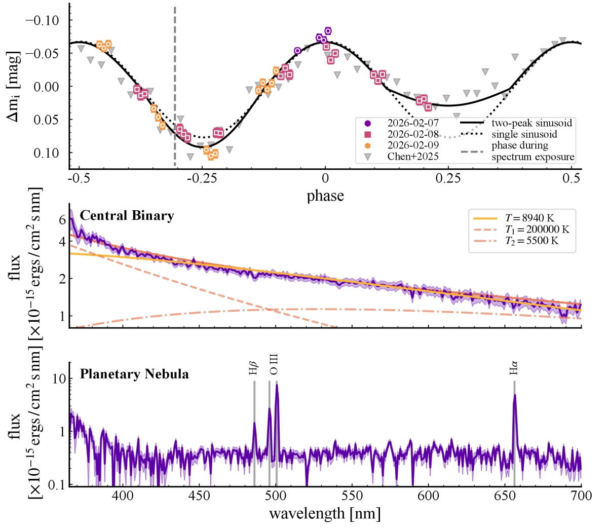
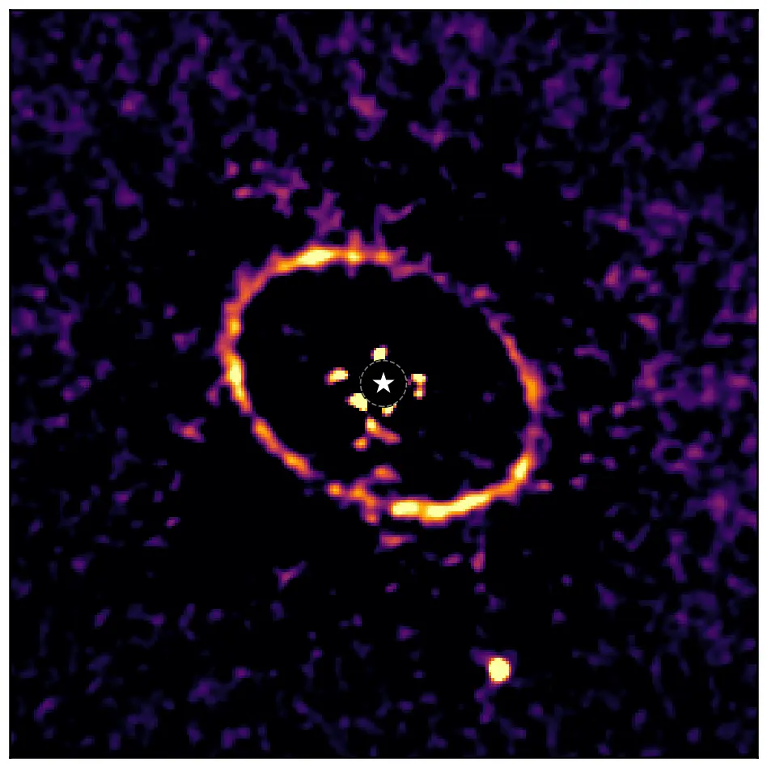
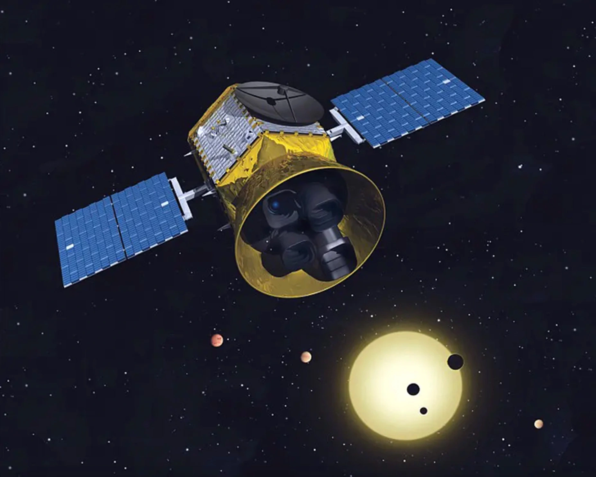
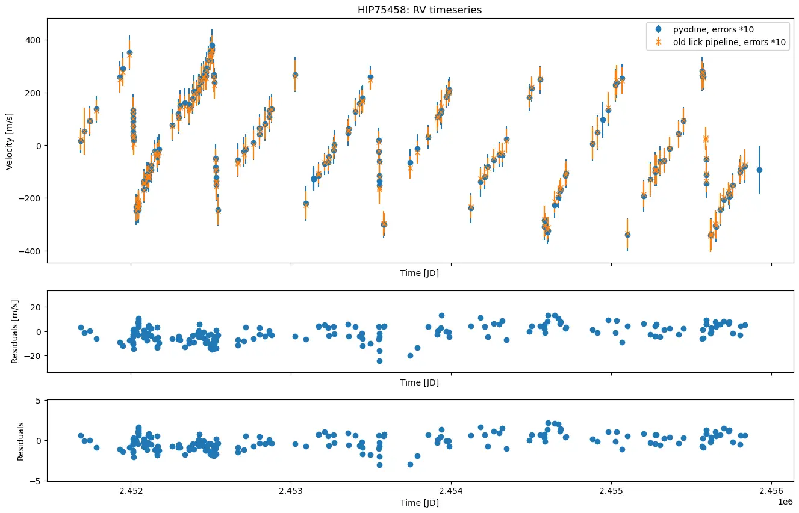

Research
Doctoral studies
My doctoral research at the Institute for Astrophysics and Geophysics at the University of Göttingen focuses on the
radial velocity (RV) method for exoplanet detection and characterization. It's one of the most powerful tools we have
for studying planets around other stars. For one, it's the only way to actually determine the mass of a planet.
Combining this with the planet radius, measured from its transit depth, lets us determine the planet's density and composition.
From this we can draw first conclusions about the planet's interior structure and figure out whether it's rocky like Earth or Mars, or more of a gas giant like Jupiter.
RV data also lets us do something called a Rossiter-McLaughlin measurement, which tells us whether a planet orbits in the same direction its star spins,
or at a tilt. The latter can hint towards a non-regular formation and evolution history of the planetary system.
While RV is one of the most productive techniques in the field, its ultimate precision is set by how well we can model the spectrograph itself including
the instrument optics, detector response, and subtle systematics imprinted on every observed spectrum. Current state-of-the-art spectrographs can reach a
precision of around 30 cm/s, which is enough to detect rocky planets around Sun-like stars.
However, a central goal is to push this precision even further, to the level of a few cm/s, which would allow us to detect Earth-like planets in the habitable zone of Sun-like stars.
Translating this to the actual shift of the spectrum on the detector, this corresponds to a shift of only a fraction of a nanometer, which is about the width of a single atom.
To ultimately achieve this level of precision, we need to understand the spectrograph and its systematics at an unprecedented level.
One method to obtain this understanding is to develop a forward-modeling technique that reconstructs observed spectra at the detector level, pixel by pixel.
By folding the spectrograph's characteristics directly into the analysis, this approach aims to reduce systematic uncertainties on derived radial velocities and push towards higher precision.
Earlier research

La Silla Observing School — The binary in the planetary nebula MPA J0705-1224
ESO La Silla Observing School · Feb 2026 · NTT/EFOSC2
Using photometry and spectroscopy from the ESO New Technology Telescope (NTT), we confirmed MPA J0705-1224 as a true planetary nebula
and showed that its central star is a 4.4-hour period binary: a white dwarf with a tidally distorted, irradiated M-dwarf companion.
Published in Research Notes of the AAS.
Read more
Planetary nebulae are thought to be the end stage of low-mass stars like our Sun, and it has become clear that binary
stars play an important role in shaping them. MPA J0705-1224 was proposed as a planetary nebula candidate with a
variable central star, so during the 2026 ESO La Silla Observing School we set out to pin down the nature of that star.
With EFOSC2 on the 3.5 m New Technology Telescope, I collected 38 photometric measurements over three nights and a
low-resolution spectrum, and carried out all observations and data reduction. The light curve shows a period of
(4.42 ± 0.08) h with two unequal minima, and the stellar spectrum is best described by two blackbodies of roughly
200 000 K and 5500 K, pointing to a hot white dwarf and a cooler companion that is stretched and heated by it.
Separating the nebula from the star in the 2D spectrum revealed clear Hα, Hβ and [O III] emission, confirming the
object as a true planetary nebula, and the Balmer line ratio gives a visual extinction of AV = (1.2 ± 0.8) mag.
One puzzle remains: heating alone should make the companion vary by at least a magnitude, far more than we observe,
so further observations are needed.

Master's thesis — High-contrast imaging of giant planets
Max Planck Institute for Astronomy, Heidelberg · VLT/SPHERE, JWST
Searching for the giant planets that sculpt debris and protoplanetary disks, using high-contrast imaging and
spectroscopy with VLT/SPHERE and JWST. Includes the public data reduction pipeline
REACHER.
Read more
Prior to my Ph.D., I worked at the Max Planck Institute for Astronomy on the search for giant planets in debris and
protoplanetary disk systems using high-contrast imaging.
Extra-solar Kuiper belt analogs, so-called debris disks, are the leftovers of planet formation and can be used to trace the architecture
of planetary systems. Through planet-disk interactions, planets can sculpt the disk structure and create features such as gaps, rings,
and warps. By studying these features, we can infer the presence of planets and constrain their properties.
However, directly detecting the planets responsible for these features is crucial to confirm their existence and to further
constrain their properties.
To detect these faint signals from planets and brown dwarfs, I applied state-of-the-art data
reduction and analysis techniques to imaging and spectroscopic observations obtained with the SPHERE instrument
at Unit Telescope 3 of the Very Large Telescope (VLT) and the James Webb Space Telescope (JWST).
In the context of this work I developed the data reduction pipeline REACHER, which applies all necessary corrections to turn raw telescope data into science-ready products.
The pipeline is publicly available on GitHub.
Two papers from this work are currently in preparation (see Publications).

TESS single transit search
University of New Mexico, Albuquerque · 2023/24 · TESS
Improving a pipeline that finds long-period planets from a single transit in TESS light curves, adding a
machine-learning detection step to cut false positives.
Read more
Most planets discovered by the transit method reside in close proximity to their host stars and are found through
multiple transits. These occur at regular intervals ranging from hours to tens of days, allowing for straightforward
detection combined with a precise determination of the planet's orbital period. Comparing these periods to the solar system,
the majority of planets in our own backyard are located further from the Sun and have orbital periods of years.
Jupiter, for example, has an orbital period of 12 years, while the outer planets Uranus and Neptune have orbital periods of decades.
Therefore, detecting these planets is more challenging. Capturing a single transit requires surveys with long-term monitoring
of the host star, or relies on serendipitous detections in short-term surveys. In the latter case, without a priori knowledge of the
event and the repetition of transits, these so-called single transit events are challenging to detect and confirm, as there is no direct way
to determine their orbital period or rule out false positives.
My work at the University of New Mexico focused on improving the single transit search pipeline for TESS lightcurves.
In addition to restructuring and organizing the existing codebase, I implemented a machine learning approach for transit
event detection based on the Python package Deep Transit (Cui et al. 2021),
which reduces the number of false positives and increases the efficiency of single transit event detection.

Bachelor's thesis — Re-Analysis of the Lick Radial Velocity Survey of Giant Stars
Landessternwarte Heidelberg · 2023 · Lick RV Survey, pyodine
Re-reducing archival radial velocities of K and G giants with the pyodine pipeline, including a new
wavelength calibration from iodine flat fields. Full thesis (PDF).
Read more
Investigating exoplanets around evolved stars is a unique opportunity to study planetary systems in a state further along in their evolution than our own Solar System.
As stars age and evolve off the main sequence, they undergo significant changes in size, luminosity, and mass loss. These changes can have profound effects on the orbits
and atmospheres of surrounding planets, providing a natural laboratory for understanding the long-term dynamics of planetary systems. By studying exoplanets around evolved stars,
we can gain insights into the future of our own Solar System and the potential fate of its planets as the Sun ages. Additionally, these evolved stars allow us to study planetary systems around stars that are more massive than the Sun,
which are difficult to characterize precisely during their main sequence phase but become more tractable as they evolve into cooler, slower-rotating giants.
One survey that has been instrumental in this field is the Lick Radial Velocity Survey for K and G Giant Stars (Frink et al. 2001), which has provided a wealth of data on the radial velocities of these evolved stars.
The Waltz spectrograph, located at a 0.7-meter telescope at the Landessternwarte Heidelberg, is built as a successor to the Lick survey. To analyze the data from this spectrograph, Heeren et al. (2023) developed a new reduction pipeline for iodine spectra called pyodine,
which is implemented in Python 3. My Bachelor's thesis focused on reanalyzing the archival Lick RV Survey data using this new pipeline, with the goal of improving the precision of radial velocity measurements and enhancing our ability to detect exoplanets around these evolved stars.
The main goal of this work was to develop a method to provide exact wavelength calibrations based on iodine flat field images for the archival Lick RV Survey data, a key requirement for the successful application of the pyodine pipeline.